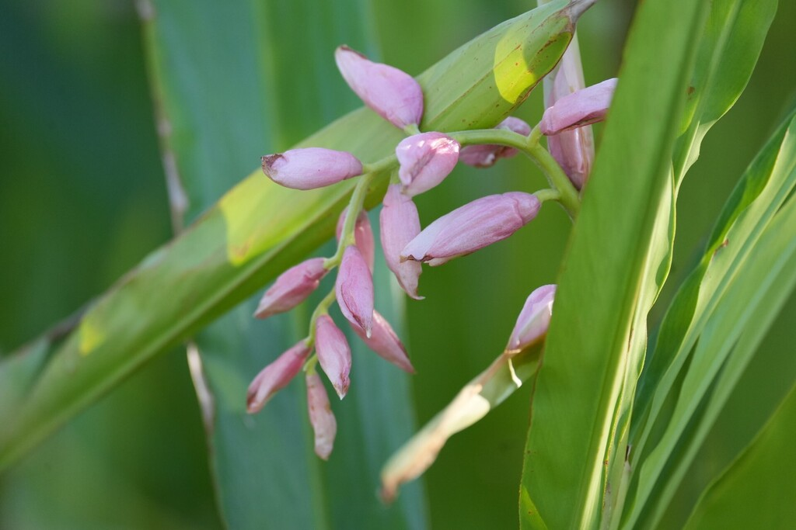

- Shell ginger has one of the stranger tricks in the plant kingdom: its style — the slender stalk connecting flower to ovary — physically curls upward or downward during the day. Two flower morphs take turns acting as male then female, a mechanism called flexistyly that all but forces cross-pollination.
- In Okinawa, where this plant is woven into everyday cooking (tea, rice cakes, noodle wrapping), researchers have noted that the local population has an unusually long life expectancy and low rates of cardiovascular disease. Correlation, not causation — but the leaves do contain a suite of flavonoids and antioxidants that have drawn serious scientific attention.
- Flowers only form on canes that are at least two years old and have not been knocked back by cold. A mild winter in Central Florida means a reliable floral show; a hard freeze means waiting another full growing cycle.
- The genus name honors Prospero Alpino, a 16th-century Italian physician and botanist who introduced coffee to Europe — an apt namesake for a plant whose leaves have been brewed into medicinal teas across Asia for centuries.
Shell ginger is native to East Asia — primarily China, Japan, Myanmar, and Indochina — where it grows in moist, shaded forest edges and stream margins at low to middle elevations. In Okinawa it has been cultivated and used in traditional cuisine and medicine for so long that it feels embedded in the culture.
It arrived in Florida as an ornamental, valued for its bold, lance-shaped leaves and arching clusters of porcelain-white-and-pink buds. The variegated cultivar became especially popular in subtropical landscaping. Neither the species nor the cultivar is native to the Americas, and neither appears on Florida's invasive species lists.
- What sets Alpinia apart from most flowering plants is a pollination strategy called flexistyly.
- Each plant belongs to one of two morphs: one starts its flowering day in male mode, releasing pollen while the stigma is held out of reach, then shifts to female mode as the style curls; the other morph runs the sequence in reverse. The result is that a bee carrying pollen from one morph almost always deposits it on a flower in the opposite mode — a built-in cross-pollination guarantee.
- The flowers themselves reward a close look. Waxy, shell-pink buds droop in a loose raceme from the arching tip of a leafy cane. As each bud opens, it reveals a tubular white flower with a yellow inner lip and a red-streaked throat — a combination that gives the species several of its common names, including pink porcelain lily.
- Across East Asia, almost every part of the plant has a use. The large leaves are used to wrap rice cakes and steam-cook food, infusing the contents with a faint gingery fragrance. The rhizomes flavor dishes and traditional medicines. In Okinawa, the leaves are sold specifically as an herbal tea ingredient, and the plant known locally as sannin is considered a mild health tonic.
- Modern phytochemical studies have confirmed a rich array of bioactive compounds — kavalactones, flavonoids, and terpenoids among them.
The nectar-rich flowers draw bees and, in warmer months, hummingbirds to the drooping flower clusters. In the plant's native Ryukyu Islands, field studies recorded dozens of flower visitors including multiple bee species and crepuscular hawk moths, which visit after dark when nectar concentration is highest.
Florida's similar suite of native bees and sphinx moths can exploit the same resource here.
The dense clumping foliage — canes that can exceed eight feet — provides reliable cover for small lizards, frogs, and ground-nesting birds. The broad leaves also channel rainfall to the base of the clump, keeping the root zone consistently moist and supporting the small invertebrates that larger wildlife depend on.
Flowers are borne only on canes that are at least two years old. Buds form in drooping racemes up to about a foot long at the arching tips of leafy stems, typically in late spring through summer. Each individual flower lasts roughly one day.
Alpinia zerumbet uses flexistyly, a mechanism in which the style physically moves during the day. The two flower morphs (cataflexistylous and anaflexistylous) alternate between releasing pollen and being receptive, timed so that a visiting bee almost always cross-pollinates rather than self-pollinates the flower.
Pollinated flowers develop into small, ribbed, globose capsules that turn red or orange at maturity. Each capsule contains several seeds. Fruit set in cultivation is variable and less reliable than in the native range.
The plant spreads primarily by expanding rhizomes, forming clumps that can be divided for propagation. Division in early spring, just before new growth emerges, is the standard nursery and garden method.
Lance-shaped leaves, up to about two feet long and five inches wide, are arranged alternately along upright canes. Foliage is fragrant when crushed. The variegated cultivar has leaves striped yellow and green; the standard form is solid deep green.
The drooping flower clusters at the tips of tall, leafy canes are the first thing to catch your eye — waxy pink buds that open to white-and-yellow flowers with red-streaked throats. Rub a leaf gently between your fingers and you'll catch a faint gingery fragrance. If the canes have finished blooming, look for small ribbed capsules ripening from green to orange-red.
At the base, new canes are emerging from the expanding rhizome clump — the plant's main strategy for spreading.
Shell ginger is not toxic to people or pets — no significant hazard is documented for any part of the plant. The leaves have a long history of culinary and medicinal use in East Asian traditions: in Okinawa they flavor teas and wrap rice cakes, and the rhizomes are used as a spice.
That said, the leaves are coarse-textured and not the sort of thing you'd eat raw, and the plant is grown here strictly as an ornamental. If you're drawn to experiment, stick to the leaf tea tradition; otherwise it's simply harmless.
The name Alpinia nutans is widely misapplied to A. zerumbet in the trade and in older references. They are distinct species: the true A. nutans is endemic to the Maluku Islands and has large red bracts that A. zerumbet lacks. If a plant in a Florida nursery or garden is labeled A. nutans, it is almost certainly A. zerumbet.
The genus name Alpinia honors Prospero Alpino (1553–1616), an Italian physician and botanist known for introducing coffee to European awareness and for his early studies of Egyptian flora.
- © Rhonda Olschefskie (CC-BY-NC), via iNaturalist